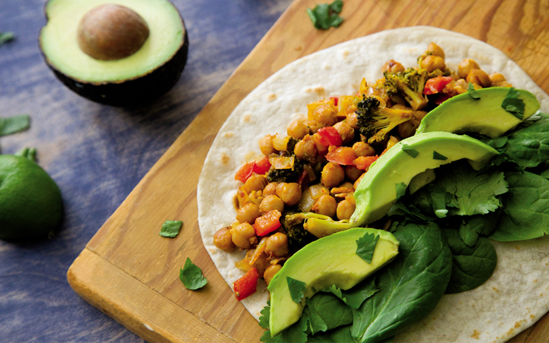

This is a fan favorite that had to appear in the book. It's a weeknight staple and one bad burrito you deserve to have in your life. Listen to the fans, The know what's up.
Ingredients
- 1 Large yellow onion
- 1 red bell pepper
- 1 large crown o broccoli
- 3 cups of cooked chickpeas*
- 3 tablespoons olive oil
- 1 to 2 tablespoons soy sauce, tamari, or Bragg's**
- 2 teaspoons chili powder
- 1 teaspoon ground cumin
- 1 teaspoon smoked paprika
- 1/2 teaspoon ground coriander***
- Cayenne pepper, to taste
- 4 cloves of garlic
- 1/2 lime
- 4 to 6 flour tortillas
- Burrito trimmings such as spinach, avocado, cilantro, and Fire-Roasted Salsa
Steps
- Crank your oven to 425 F.
- Chop up the onion, bell pepper, and broccoli.
- Put all chopped vegies into a large bowl with the chickpeas.
- Put in all the oil, soy sauce, and spices and mix.
- Bake for 20 minutes.
- Remove from oven, mix then bake for 15 minutes.
- Remove from oven then squeeze lime juice on top then mix.
- Make burritos.
return to top
return to main page